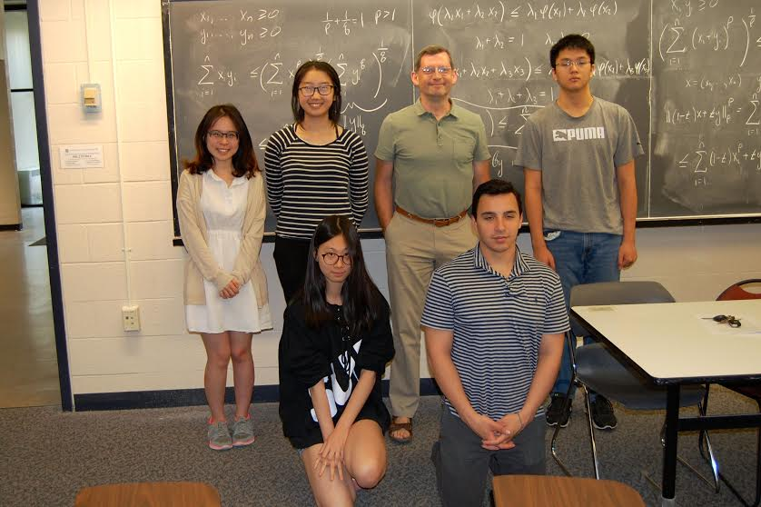

What you
can expect if you become my Ph.D. student

Style of advising: My approach to each
student depends on the student's individual needs and preferences. I
typically meet with each student once a week, but I am willing and
able to meet more often if the student requires extra help,
especially early in the process. I prefer not to go for long periods
of time without meeting with the student in order to make sure that
things are running smoothly. Initially, I give most of my students a
problem that I have thought through to a certain extent and believe
it can be solved in a reasonable time frame. The second problem
tends to be considerably harder, and so on. As the student
progresses, they are expected to show more and more independence in
the problem selection. When the student is close to graduating, I
make an utmost effort to help them find a job, either in academia or
industry, depending on the student's preferences. Some of my
student's are co-advised with my colleagues, especially in cases
when they work on problems involving several areas of mathematics.
For example, I co-advised several students with Kaave Hosseini,
Sevak Mkrtchyan, and Jonathan Pakianathan.
You can find the list of my past and current graduate students here.
Contact suggestions: If you would like to
discuss the possibility of applying to the University of Rochester
graduate program in mathematics or anything else, please feel free
to stop by my office (Hylan 909), or email me at iosevich@gmail.com.
Videos of some of my research presentations:
The list of problems you can expect to work if you work with me and
their descriptions are given below. Here are a few links to my
recent research lectures:
-- Hausdorff Institute lectures on exact signal recovery (September
2024).
Lecture 1, Lecture 2,
Lecture 3,
Lecture 4
-- On distance sets and computational complexity (February 2023) NYU
and CUNY GS joint seminar. Lecture
-- Incidence theory and uniform distribution in higher dimensions
(February 2023) Institute for Advanced Study in Princeton. Lecture
-- Some number theoretic aspects of finite point configurations
(June 2023) Number Theory Web Seminar. Lecture
-- Tiling, bases, and elementary combinatorics, (November 2022),
HAPPY TALK, University of Pennsylvania. Lecture
-- Finite point configurations in discrete and continuous settings
(October 2022). Colloquium, University of Yerevan. Lecture
You can also find some of my talks on more elementary topics here: Link
Problems you can expect to work on: I work
on problems at the sticking points of harmonic analysis,
combinatorics, and number theory. I also work in theoretical and
applied data science. If you want to work with me, there are four
main options and some combinations thereof:
Uncertainty principles, signal recovery, spectral synthesis, and
applications to data science:
The basic question is, if a function from a d-dimensional module
over the integer mod N is transmitted via its Fourier transform and
some of the frequencies are unobserved, can we recover the origin
signal (function) exactly, without any errors. In a seminar paper
from 1989, Donoho and Stark proved that the answer is yes if the
signal is sufficiently sparse and the number of missing frequencies
is sufficiently small. The key tool is the uncertainty principle
which has been improved in a variety of settings by Tao, Meshulam
and Iosevich-Mayeli in a recent paper connecting signal recovery to
restriction theory for the Fourier transform. This line of research
has both pure and applied aspects and there are strong connections
with Learning Theory. Pablo Bhowmik, Will Burstein, Shantanu
Deodhar, Zhihe Li, Hari Nathan and Ella Yu, both current Ph.D.
students at the University of Rochester, are currently working on
these and related topics.
Harmonic analysis with an emphasis on configuration problems in
geometric measure theory:
The basic question is, how large does a set in Euclidean space (or a
Riemannian manifold) need to be to ensure that it contains vertices
of a geometric configuration such as an equilateral triangle, an
angle of a given size, or a chain of a given length. A combination
of Fourier analytic and combinatorial methods play an important
role. The key problem in this area is the Falconer distance
conjecture which says that if the Hausdorff dimension of a compact
set is half the ambient dimension, then the Lebesgue measure of the
set of pairwise distances is positive.
Among the Ph.D. students who worked or are working with me in this
area are Shengze Duan (current graduate student), Quy Pham (current
graduate student), Donggeun Ryou (current graduate student), Brian
McDonald (former graduate student and currently a postdoc at the
University of Georgia), Alex McDonald (former graduate student and
currently a postdoctoral researcher at Ohio State University), Nik
Chatzikonstantinou (former Ph.D. student at UR and currently a
postdoc in Okinawa), Bochen Liu (former Ph.D. student and currently
an Associate Professor at Southern Chinese University), Steven
Senger (Associate Professor at the University of Missouri), Belmiro
da Silva (instructor at Rensselaer Polytechnic), Krystal Taylor
(Associate Professor, Ohio State), Brianna Vick (Assistant Professor
at Clayton State University).
Distribution of the eigenvalues of the Laplacian on Riemannian
manifolds, the Weyl Law, and the Uncertainty Principle:
In the past couple of years, I have been studying the
distribution of eigenvalues on product manifolds. The key question
here is whether the remainder term in the classical Weyl Law can
always be improved in the product setting. Emmett Wyman (a former
postdoctoral researcher at the University of Rochester and currently
an Assistant Professor at SUNY Binghampton) and I proved that this
is indeed the case, with concrete exponents, in the case of the
product of spheres. We are currently working on the general case and
there are many potentially fruitful opportunities for graduate
students interested in this subject matter.
Azita Mayeli (CUNY), Emmett Wyman (Binghampton) and I recently
proved a variety of Fourier Uncertainty Principle results on
Riemannian manifolds. The basic question is, given
Configuration problems in vector spaces over finite fields or in
modules over commutative rings:
While there is some overlap between the techniques involved in the
two disciplines, the problems in the finite field setting have a
non-trivial arithmetic component which frequently gives the problems
a distinct flavor. In this setting we ask how large a subset of the
d-dimensional vector space over a finite field needs to be to ensure
that it contains vertices of an equilateral simplex or another
geometric structure. Another key question is the sum-product
question which asks for the smallest possible size of minimum of the
sum set and the product set of a subset of a given finite field.
Among the Ph.D. students who worked with me in this area are Esen
Aksoy (postdoctoral research at the University of Ankara), Philipp
Birklbauer (working in industry), Jeremy Chapman (former graduate
student and currently a Professor at the Lyons College), David
Covert (former graduate student and current an Assistant Professor
at the University of Missouri-St. Louis), Doowon Koh (Associate
Professor at Chungbuk University), Alex McDonald (postdoc at Ohio
State), Brendan Murphy (former graduate student and currently a
postdoctoral researcher at the University of Bristol), Steven Senger
(Associate Professor at Missouri State University), Le Anh Vinh
(Professor at the University of Hanoi).
The Erdos distance conjecture and related problems:
This problem asks for the minimal number of the pairwise distances
determined by the elements of a finite subset of a d-dimensional
vector space over the real numbers. This conjecture was resolved in
two dimension in 2011 by Larry Guth and Nets Katz, but the higher
dimensional case remains wide open. The sum-product phenomenon
described above is very much alive and well in this setting as well.
Among the Ph.D. students who worked or are working with me in
this area are Steven Senger (Associate Professor at Missouri State),
Jonathan Passant (Heilbronn postdoc at the University of Bristol)
and Firdavs Rakhmonov (current Ph.D. student at UR).
Data science and connections with geometric combinatorics:
Last, but not least, there is also an option of working with me on
problems in data science, ranging from completely applied to
theoretical. I also work on applying some ideas from Learning
Theory, the theoretical framework behind Data science, to analysis
and combinatorics. In the applied data science realm, I am working
on concrete sampling bounds for time series that would guarantee,
with high probability, a forecast for a given time series can be
given with high probability. I have also co-authored a series of
paper recently studying the Vapnik-Chervonenkis dimension (one the
key concepts of Learning Theory) of families of indicator functions
of spheres centered at point of subsets of a given size of vector
spaces over finite fields. This yields an interesting new angle on
the finite field configuration problems mentioned above. Among the
graduate students who have worked in this direction are Brian
McDonald (a former graduate student and currently a postdoctoral
researcher at the University of Georgia), Shashank Chorge (former
graduate student and currently a postdoctoral research at IIT,
India), and Pablo Bhowmick (current graduate student).
The complete list of my current and former Ph.D. students can be
found here.
You can find links to all of my publicans, both recent and not so
recent, as well as the list of the invited lectures I have given
over the years in my CV
as well.
Recent publications most relevant to the analysis aspects of
my work are the following:
On Falconer distance
set problem in the plane, with Guth, Ou and Wang, published in
Inventiones.
On Gabor orthogonal
bases and convexity, with Mayeli, published in Discrete Analysis
Rigidity, graphs and
Hausdorff dimension, with Chatzikonstantinou, Mkrtchyan and
Pakianathan,
Equilateral triangles
in subsets of Euclidean space of large Hausdorff dimension, with
Bochen Liu, published in Israel Math Journal.
Finite chains inside
thin subsets of Euclidean space, with Bennett and Taylor,
published in Analysis and PDE
A group theoretic
viewpoint on the Erdos-Falconer problems and the Mattila integral,
with Greenleaf, Liu and Palsson, published in Revista Iberoamericana
There is a number of other recent papers in this direction, but
these will give you an idea of what is going on.
Recent publications most relevant to the uncertainty principle
and signal recovery aspects of my work are the following:
Uncertainty principle
on finite abelian groups, restriction theory, and applications to
sparse signal recovery, with Azita Mayeli, (submitted for
publication).
Fractal
dimension, approximation and data sets, with Betti, Chio,
Fleischman, Iulianelli, Kirila, Martino, Mayeli, Pack, Sheng,
Taliancic, Thomas, Whybra, Wyman, Yildirim, and Zhao, (to appear in
CANT 2023 Springer Proceedings volume).
Recent publications of mine that are most relevant to the
analytic combinatorics in finite fields are the
following:
On restriction
estimates for spheres in finite fields, with Koh, Lee, Pham
and Shen, submitted for publication
A new bound for the
Erdos distinct distances problem in a plane over a finite field,
with Koh, Pham, Shen and Vinh, submitted for publication
On a quotient set of
a distance set, with Koh and Parshall, published in Moscow
Journal of Combinatorics and Number Theory.
The Fuglede
conjecture in vector spaces over finite fields, with Mayeli
and Pakianathan, published in Analysis and PDE
Group action and
combinatorics and vector spaces over finite fields, with
Bennett, Hart, Pakianathan and Rudnev, published in Forum
Mathematicum
Erdos distance
problem in vector spaces over finite fields, with Rudnev,
published in Transactions of the AMS
Recent publications of mine that are most relevant to the
discrete combinatorial aspects of my work are the following:
On discrete values of
bilinear forms, with Roche-Newton and Rudnev, published in the
Moscow Journal of Number Theory and Combinatorics
Finite point
configurations in the plane, rigidity and Erdos problems, with
Passant, published in the Steklov Institute Proceedings in honor of
Konyagin's 60th birthday
On the unit distance
problem, published in the conference proceedings of the CIMPA
2017 conference in Buenos-Aires
Recent publications of mine that are most relevant to the data
science/learning theory and its connections with other areas are
the following:
Dot products in three
dimensional vector spaces over finite fields and the
Vapnik-Chervonenkis dimension, with McDonald and Sun,
published in Discrete Math
The
VC-dimension and point configurations in two-dimensional vector
spaces over finite fields, with Fitzpatrick, McDonald and
Wyman, to appear in Discrete and Computational Geometry
Fractal
dimension, approximation and data sets, with Betti, Chio,
Fleischman, Iulianelli, Kirila, Martino, Mayeli, Pack, Sheng,
Taliancic, Thomas, Whybra, Wyman, Yildirim, and Zhao, (to appear in
CANT 2023 Springer Proceedings volume).
It is important to note that a substantial number of the papers
mentioned above and other papers that I have written can be put in
multiple categories. If you become my student, you will hear
exclamations about the unity of mathematics all the time!